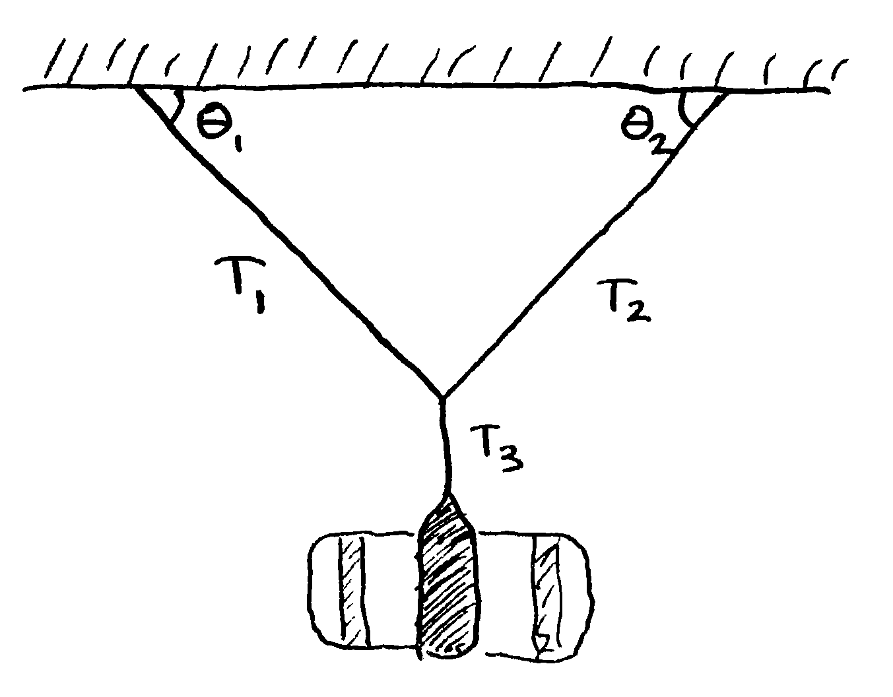
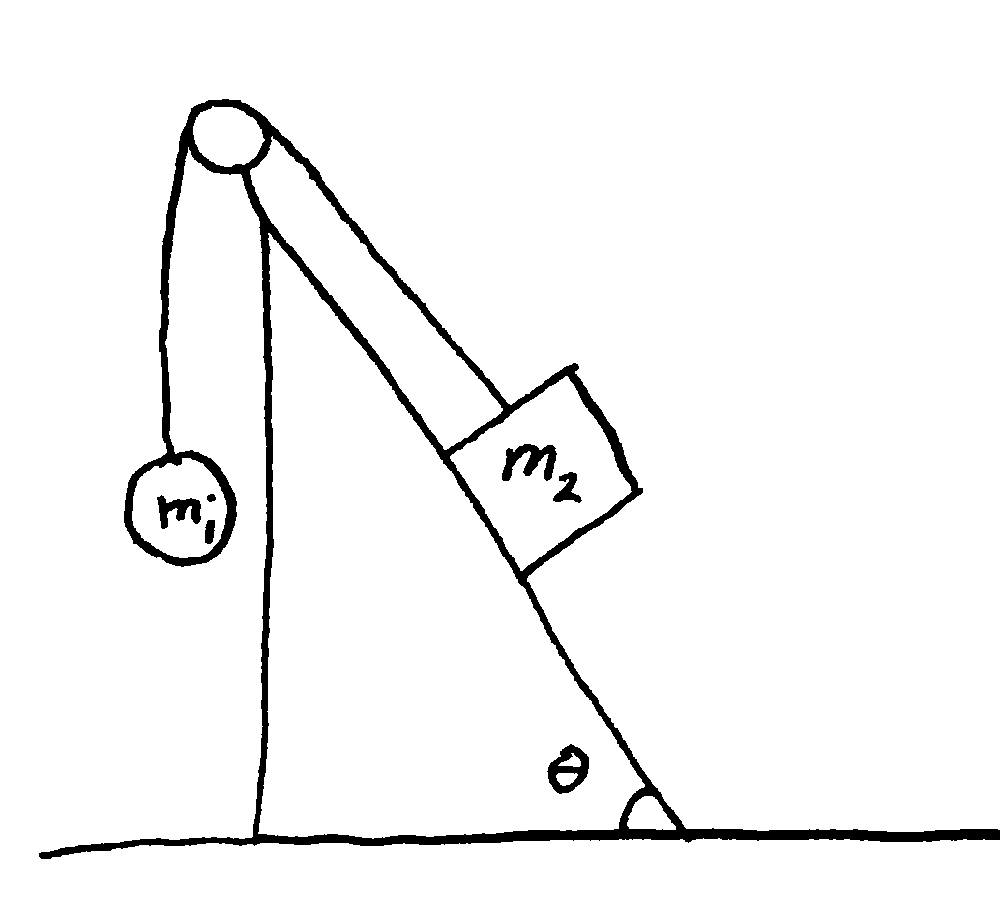
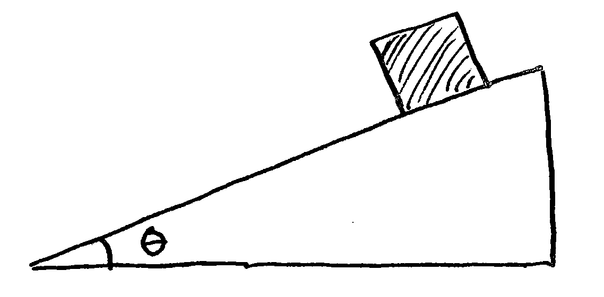
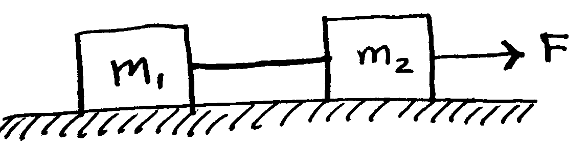
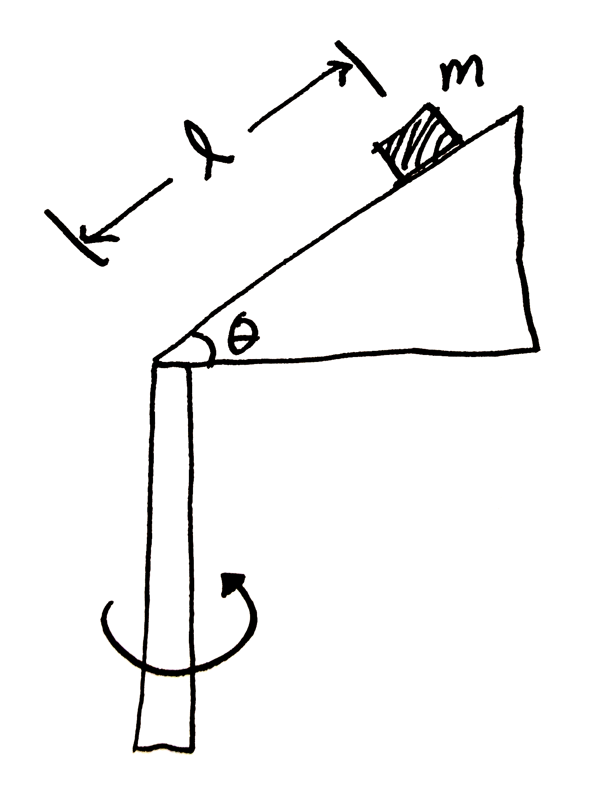
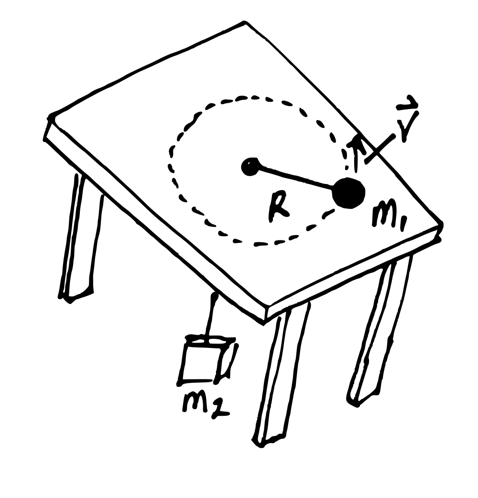

Homework 3 - Force
Problem 3.1
A bag of cement whose weight is \(F_g\) hangs in equilibrium from three wires as shown below. Two of the wires make angles \(\theta_1\) and \(\theta_2\) with the horizontal. Assuming the system is in equilibrium, show that the tension in the lefthand wire is \[ T_1 = \frac{F_g \, \cos \theta_2}{\sin(\theta_1 + \theta_2)}\]

Problem 3.2
Two objects are connected by a light string that passes over a frictionless pulley as shown below. Assume the incline is frictionless and take \(m_1 = 2.00~kg\), \(m_2 =6.00~kg\), and \(\theta = 55.0^\circ\).
- Draw free-body diagrams of both objects.
- Find the magnitude of the acceleration of the objects.
- Find the tension in the string.
- Find the speed of each object \(2.00~s\) after it is released from rest.

Problem 3.3
A block is given an initial velocity of \(5.00~m/s\) up a frictionless incline of angle \(\theta = 20.0^\circ\) as shown below. How far up the incline does the block slide before coming to rest?

Problem 3.4
To determine the coefficients of friction between rubber and various surfaces, a student uses a rubber eraser and an incline. In one experiment, the eraser begins to slip down the incline when the angle of inclination is \(36.0^\circ\) and then moves down the incline with constant speed when the angle is reduced to \(30.0^\circ\). From these data, determine the coefficients of static and kinetic friction for this experiment.
Problem 3.5
Two blocks connected by a rope of negligible mass are being dragged by a horizontal force, as shown below. Suppose \(F = 68.0~N\), \(m_1 = 12.0~kg\), \(m_2 = 18.0~kg\), and the coefficient of kinetic friction between each block and the surface is \(\mu=0.100\).
- Draw a free-body diagram for each block.
- Determine the acceleration of the system and
- Determine the tension \(T\) in the rope.

Problem 3.6
A child’s toy consists of a small wedge that has an acute angle \(\theta\). The sloping side of the wedge is frictionless, and an object of mass \(m\) on it remains at constant height if the wedge is spun at a certain constant speed. The wedge is spun by rotating, as an axis, a vertical rod that is firmly attached to the wedge at the bottom end. Show that, when the object sits at rest at a point at distance \(\ell\) up along the wedge, the speed of the object must be:
\[v = \sqrt{g \ell \sin \theta}\]

Problem 3.7
A coin placed \(30.0~cm\) from the center of a rotating, horizontal turntable slips when its speed is \(50.0~cm/s\).
- What force causes the centripetal acceleration when the coin is stationary relative to the turntable?
- What is the coefficient of static friction between coin and turntable?
Problem 3.8
An air puck of mass \(m_1 = 0.25~kg\) is tied to a string and allowed to revolve in a circle of radius \(R=1.0~m\) on a frictionless horizontal table. The other end of the string passes through a hole in the center of the table, and a mass \(m_2 =1.0~kg\) is tied to it, as shown in the figure. The suspended mass remains in equilibrium while the pick on the tabletop revolves.
- What is the tension in the string?
- What is the horizontal force acting on the puck?
- What is the speed of the puck?
